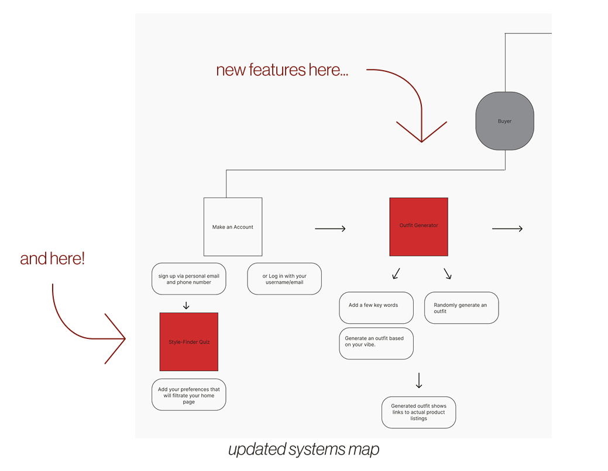
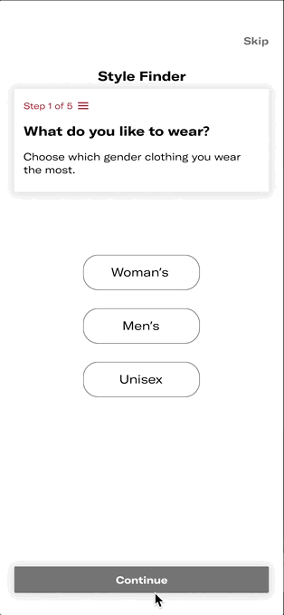
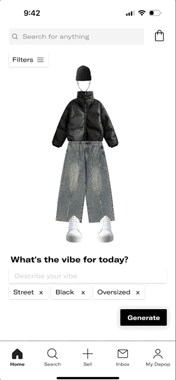
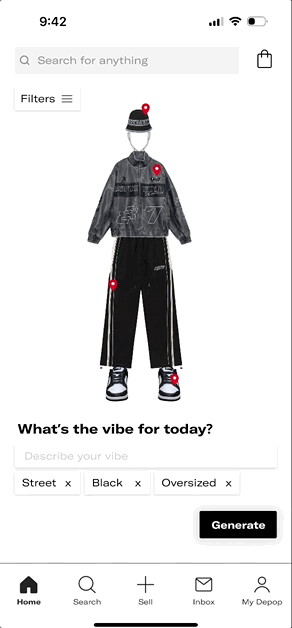
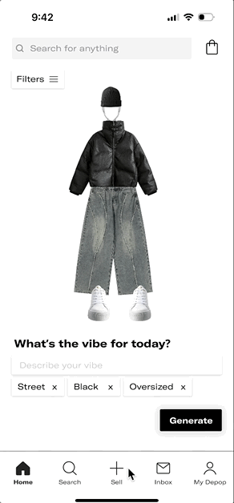

so... what's the problem?
I started using Depop when I was in high school. I found the concept of online thrifting to be so convenient and expected to curate my feed similar to how I curated my Pinterest; however, I noticed that in Depop's user flow, they lack personalized shopping experiences for each user.
JTBD
When I open Depop to find second-hand fashion I love, I want to see clothes that reflect my personal style and values — so I can shop more confidently, creatively, and consciously.
I needed to design a solution that made users feel recognized — not just as shoppers, but as individuals.
understanding user needs
To go beyond assumptions, I conducted three in-depth interviews with Depop’s core audience: 18–26-year-olds who were regular or occasional users. I designed an interview script with over 30 open-ended questions focused on personalization, trust, shopping behavior, and emotional connection to the app.
click on the cards to see what i found...
These weren’t just feature gaps — they were emotional gaps. People weren’t converting because they weren’t connecting.
sketching
To build on these insights, I hosted a collaborative brainstorming session with four other designers. We anchored our session around a key question:
HMW
How might we make Depop feel like it was built for you?
Ideas ranged from styling quizzes to avatar customization to mood-based outfit pairings. I distilled the strongest ones into three concept pillars: profile personalization, smart outfit generation, and dynamic, trust-building post previews.
prototyping & user testing
Using Figma, I created mid-fidelity prototypes that brought these ideas to life and tested them with three users. Watching them interact with the new features helped me spot friction points — some didn’t notice the outfit generator at first, while others wanted more control over filtering their results. These observations pushed me to refine not just the visuals, but the placement and hierarchy of each feature.
here's what i learned...
One of my biggest takeaways was that even the most exciting features need context. Users responded best when the interface made them feel in control — not just guided, but empowered.
systems map
I realized that introducing these features meant more than tacking on new screens — it meant rethinking Depop’s entire buyer flow. I rebuilt the system map to reflect both the seller and buyer journeys, and then layered in where the new features would live, how they’d connect, and what data they’d need to function. This helped me ensure that my additions weren’t disruptive, but integrated — supporting the app’s circular values while deepening engagement.

Introducing Depop: Styled By You
At the heart of my solution is a belief: personalization doesn’t have to mean overcomplication. It can be as simple as asking the right questions, showing the right content, and helping users feel like they belong.
Here’s what I designed:
the style finder quiz
A five-step quiz that appears right after sign-up. It asks users about their go-to styles, favorite fits, colors, brands, and even how they want their clothes to make them feel. It’s short, visual, and fun — and its answers power everything else.

the outfit generator
Using the quiz data, this tool generates full outfits that align with user preferences. Each outfit is displayed on an avatar, with direct links to second-hand pieces currently available from sellers. It’s like having a Depop stylist, tailored to your taste.

pinpointed posts
Each item in an outfit has a tag. Tap it, and a mini pop-up appears — showing similar real listings you can save or click into. It’s a bridge between inspiration and purchase, removing the friction of having to manually search for similar pieces.

edge case
If a user skips the onboarding quiz, they can always adjust their preferences manually on the homepage. These filters not only update the outfit generator, but also reshape the entire shopping feed — ensuring relevance without redundancy.

learnings
If I could go back, I would start with even scrappier sketches — exploring more layout options and onboarding moments before jumping into mid-fi. I’d also want to prototype with motion: Depop’s current app has playful loading bars and animations that add charm, and I’d love to explore how to build that personality into my flows. Finally, I’d expand research to include sellers — understanding their experience could uncover new ways to improve trust on both sides of the marketplace.
next steps
If I were to continue this project, my next focus would be on deepening buyer-seller trust. How might we show a seller’s history, values, or packaging practices upfront? I’d also push the outfit generator to be more inclusive — allowing users to select body types, cultural influences, or accessibility needs. Because style is never one-size-fits-all — and neither is good design.
This project deepened my belief that good design balances structure with soul. By embedding personalization into Depop’s buyer flow, I made discovery feel more like self-expression than search. It reminded me that even in structured systems, we’re designing for people—real, emotional, human.